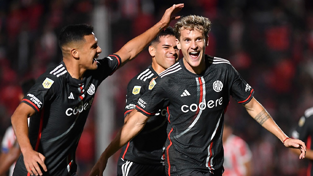
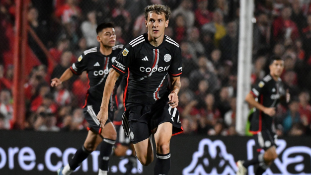
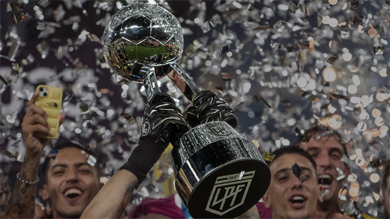
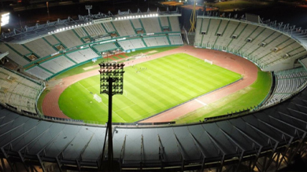
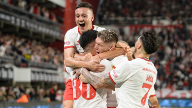

Con un hat-trick de Colidio, River se lo dio vuelta a Instituto y clasificó primero en la Zona A. El Millonario le ganó 3 a 1 a la Gloria, anoche, en condición de visitante, por la fecha 14 de la Copa de la Liga, y selló su pasaje a los cuartos de final. Con este resultado, aunque por momentos estuvo virtualmente eliminado, el conjunto de Núñez selló su clasificación a la próxima instancia de la Copa de la Liga, con 27 puntos, y como líder de la Zona A. Convirtiendo a los 12 y 17 minutos de cabeza y a los 28 tras un rebote Facundo Colidio se llevo la pelota.
HAT-TRICK Y RIVER CLASIFICA COMO PRIMERO DE GRUPO
Tras una mala salida de River desde el fondo, el árbitro Silvio Trucco sancionó penal para Instituto por una falta de Rodrigo Villagra. El propio Puebla fue quien cambió la pena máxima por gol y puso en ventaja al elenco cordobés, River estuvo al borde de la igualdad pero desperdicio todas sis llegadas en el primer tiempo.


El descanso llegó en el peor momento para River, ya que a raíz de los resultados restantes de la jornada se quedaba afuera de los playoffs. En el complemento, el "Millonario" salió decidido a buscar la igualdad aunque volvía a estar entre los cuatro mejores por el empate parcial de Talleres con Independiente Rivadavia en Avellaneda.
No obstante, un cabezazo de Colidio les trajo tranquilidad a los dirigidos por Demichelis, que a puto empuje arrinconaron a un rival que no logró aguantar el ritmo con el que lo complicó notablemente en la primera mitad, hasta que el delantero volvió a aparecer por la misma vía cinco minutos más tarde para dar vuelta el resultado. A los 28, además, el atacante selló su hat-trick: definió mano a mano pero Manuel Roffo le contuvo el tiro, aunque en el rebote Colidio definió de zurda y puso cifras definitivas en el marcador.

CUARTOS DE FINAL: Cruces, resultados y llave
El 2024 del fútbol argentino empezó con la disputa de la Copa de la Liga, que avanzó con ...

LOS CUARTOS TIENEN SEDE, FECHA Y HORA
La Copa de la Liga entra en su fase final y la Liga Profesional de Fútbol confirmó las sedes y ...

CONTUNDENTE TRIUNFO DE ESTUDIANTES
Categórico triunfo del Pincha. De principio a fin. Estudiantes le ganó a Barracas Central por 3 ...